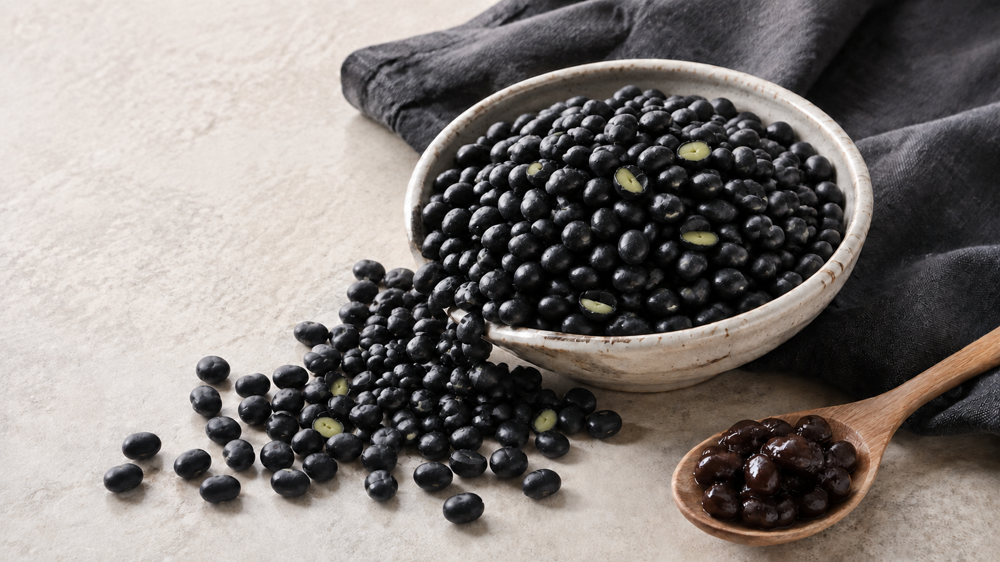
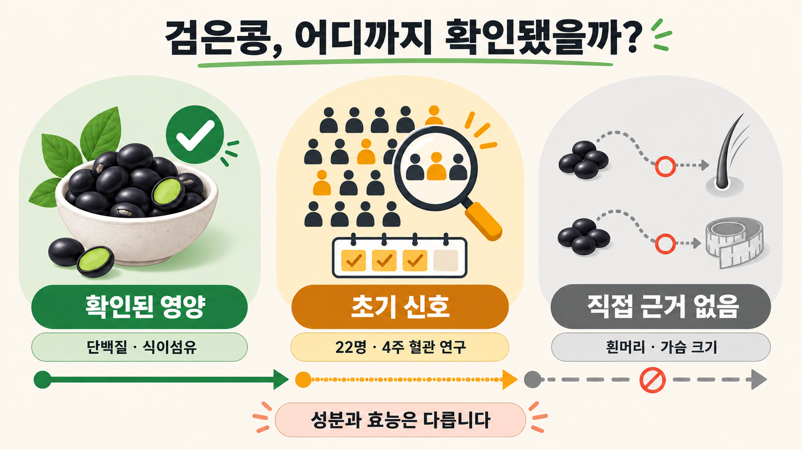

안녕하세요. dev.log입니다.
검은콩을 검색하면 흰머리가 검어진다거나 탈모를 막고, 여성의 가슴도 커지게 한다는 이야기가 따라붙습니다. 결론부터 말하면 검은콩과 서리태는 단백질과 식이섬유를 보태기 좋은 콩이지만, 이런 외모 변화를 기대하며 먹을 식품은 아닙니다. 흰머리나 가슴 크기를 바꾼다는 직접적인 사람 대상 근거는 확인되지 않았습니다.
처음 먹는다면 거창한 검은콩 요리보다 밥이나 샐러드에 충분히 익힌 콩을 한두 숟가락 더하는 편이 쉽습니다. 검은콩의 장점은 신비한 검은색보다 꾸준히 먹을 수 있는 콩 한 가지가 생긴다는 데 있습니다.

먼저 궁금한 것부터
| 질문 | 짧은 답 |
|---|---|
| 검은콩과 서리태는 같은가요? | 검은콩은 껍질이 검은 콩을 묶어 부르는 범주이고, 서리태는 그 안에 들어가는 한 종류입니다. |
| 검은콩은 일반 콩보다 무조건 좋은가요? | 검은 껍질에는 안토시아닌이 있지만, 기본적인 단백질과 이소플라본은 다른 대두에도 있습니다. |
| 흰머리가 다시 검어지나요? | 검은콩 섭취로 모발 색이 돌아온다는 사람 대상 직접 근거는 확인되지 않았습니다. |
| 탈모 예방에 효과가 있나요? | 추출물 연구는 있지만 외용 사례나 동물실험이 중심이라, 먹는 콩의 탈모 치료 효과로 볼 수 없습니다. |
| 여성의 가슴이 커지나요? | 유방 크기 증가를 입증한 임상시험을 찾지 못했습니다. 이소플라본이 에스트로겐과 비슷하다는 설명만으로 확대 효과를 주장할 수 없습니다. |
검은콩과 서리태, 범주와 한 종류
국립국어원은 검정콩을 껍질 색이 검은 콩으로 풀이합니다. 검은콩이라는 말은 색을 기준으로 묶은 이름에 가깝습니다. 서리태는 그 범주에 들어가는 대두의 한 종류입니다. 농촌진흥청도 재래 서리태를 개량한 청자5호를 검정콩으로 설명합니다.
따라서 모든 검은콩을 서리태라고 부르는 것은 정확하지 않습니다. 장을 볼 때에는 앞면의 검은콩 문구만 보기보다 원재료명에서 서리태인지 다른 검정콩 품종인지 확인하면 됩니다. 서리태를 반드시 골라야 건강해지는 것은 아니므로 가격과 용도, 맛도 함께 고려해도 괜찮습니다.
삶은 서리태 100g의 영양
농촌진흥청 국가표준식품성분표 제9개정판에는 삶은 서리태의 분석값이 실려 있습니다. 가식부 100g에는 열량 197kcal, 단백질 19.02g, 지방 8.75g, 탄수화물 11.39g, 총식이섬유 9.4g이 들어 있습니다. 칼륨은 672mg, 철은 2.57mg, 마그네슘은 97mg으로 기록돼 있습니다.
| 삶은 서리태 100g | 함량 | 식사에서 보는 의미 |
|---|---|---|
| 열량 | 197kcal | 간식처럼 계속 집어 먹기보다 식사의 일부로 양을 정하는 편이 좋습니다. |
| 단백질 | 19.02g | 밥이나 샐러드에 넣으면 식물성 단백질을 보탤 수 있습니다. |
| 지방 | 8.75g | 콩은 단백질뿐 아니라 지방도 함께 가진 식품입니다. |
| 총식이섬유 | 9.4g | 포만감과 식사의 섬유질을 보태는 데 유용합니다. |
| 칼륨 | 672mg | 여러 식품과 함께 먹으며 무기질을 보충할 수 있습니다. |
이 수치는 2014년에 분석해 2016년 표에 수록한 값입니다. 품종, 재배 환경, 불리는 시간과 삶은 뒤 남은 수분에 따라 실제 한 그릇의 값은 달라집니다. 표의 100g을 하루 권장량으로 받아들이기보다, 어떤 영양소를 함께 가진 식품인지 판단하는 기준으로 사용하는 편이 정확합니다.
검은콩의 성분과 사람 연구
검은콩과 노란 대두의 눈에 띄는 차이는 종피입니다. 검은콩 종피에서는 cyanidin-3-glucoside 같은 안토시아닌이 확인됐습니다. 검은콩 10종의 종피를 분석한 연구에서는 총안토시아닌 함량이 1g당 1.58~20.18mg으로 품종별 차이가 컸습니다. 종피 추출값을 삶은 콩 한 그릇의 흡수량이나 질병 예방 효과로 바꿔 말할 수는 없습니다.

콩 자체의 근거와 검은 껍질만의 근거도 구분해야 합니다. FDA가 선정한 46개 대조시험을 재분석한 연구에서 전체 분석에는 43개 시험, LDL 분석에는 자료를 제공한 41개 시험이 포함됐습니다. 참가자들은 하루 중앙값 25g의 대두 단백질을 약 6주 섭취했고, LDL 콜레스테롤은 비교 식단보다 평균 4.76mg/dL 낮았습니다. 대두 단백질 전반의 작은 효과이며, 서리태 몇 숟가락이나 검은색 성분만의 결과는 아닙니다.
검은콩 분말 20g을 넣은 쿠키를 4주간 먹은 건강한 성인 22명의 교차시험에서는 혈관 기능과 수축기 혈압이 나아지는 신호가 관찰됐습니다. 표본이 작고 기간이 짧은 데다 특정 시험식품을 사용했습니다. 검은콩의 고혈압 치료 효과로 확대하기에는 근거가 부족합니다.
밥과 반찬에 넣는 가장 쉬운 시작
가장 부담이 적은 방법은 삶은 콩을 한 번에 많이 먹기보다 평소 식사에 조금씩 넣는 것입니다.
- 마른 서리태를 골라 씻고 충분히 불립니다.
- 콩 비린내와 단단한 속이 남지 않도록 속까지 충분히 익힙니다.
- 처음에는 밥, 샐러드, 요거트에 한두 숟가락을 더해 소화 반응을 봅니다.
- 설탕이 많은 콩조림이나 달콤한 검은콩 음료는 제품의 당류와 총열량도 확인합니다.
생대두의 트립신 저해제와 렉틴은 열처리로 상당 부분 줄어듭니다. 생콩을 건강식처럼 씹어 먹기보다 삶거나 볶아서 충분히 익혀야 하는 이유입니다. 콩은 일부 사람에게 복부 팽만 같은 소화 불편을 일으킬 수 있으므로, 처음부터 많은 양을 먹지 않는 편이 좋습니다.
흰머리·탈모 연구가 실제로 확인한 범위
조기 흰머리 체계적 문헌고찰은 가족력, 흡연, 일부 영양 결핍과 질환을 관련 요인으로 정리했지만 검은콩 식사를 치료로 제시하지는 않았습니다. PubMed에서 검은콩·서리태와 흰머리·모발 색을 제목과 초록으로 묶어 검색했을 때에도, 사람이 검은콩을 먹고 흰머리가 검어졌는지 시험한 연구는 확인되지 않았습니다.
관련 연구는 모발 색보다 성장과 탈락을 다룹니다. 검은콩 추출물을 두피에 12주 동안 바른 성인 10명 사례 연구에서는 모발 탈락 수와 굵기의 변화가 보고됐습니다. 대조군이 없는 소규모 외용 연구이며 모발 색은 측정하지 않았습니다. 생쥐 연구도 있지만, 추출물의 농도와 사용 방식이 일상에서 콩을 먹는 것과 다릅니다.
따라서 서리태밥을 먹는 일을 탈모 치료나 흰머리 회복법으로 설명해서는 안 됩니다. 갑자기 흰머리가 늘거나 탈모가 두드러진다면 특정 식품을 더 먹는 것보다 원인을 확인하는 진료가 먼저입니다.
이소플라본과 가슴 크기 사이의 비약
콩 이소플라본은 구조가 에스트로겐과 비슷해 식물성 에스트로겐으로 불립니다. 인체에서 여성호르몬과 똑같은 강도로 같은 작용을 한다는 뜻은 아닙니다. 수용체의 종류와 조직, 섭취량에 따라 작용이 달라질 수 있습니다.
폐경 후 여성 3,285명이 포함된 40개 무작위시험 메타분석은 몸 안에서 에스트로겐처럼 뚜렷하게 작용하는지 네 가지 지표로 확인했습니다. 이소플라본 섭취에 따른 유의한 변화는 어느 지표에서도 나타나지 않았습니다. 연구진은 이소플라본을 에스트로겐 자체보다 선택적으로 작용하는 물질에 가깝다고 해석했습니다.
유방과 관련해서는 크기보다 유방 밀도를 측정한 연구가 주로 확인됩니다. 8개 무작위시험, 여성 1,287명을 종합한 분석에서 전체 참가자의 유방 밀도 변화는 유의하지 않았습니다. 폐경 전 여성에게 작은 변화 신호가 있었지만 민감도 분석 하나에서는 사라졌습니다. 유방 밀도는 유방 크기와도 다른 지표입니다.
Codex는 PubMed에서 콩·이소플라본을 유방 크기·부피·확대·성장이라는 표현과 묶어 제목·초록을 검색했습니다. 여성이 콩이나 검은콩 식품을 먹고 유방 크기가 커지는지를 시험한 임상시험은 확인되지 않았습니다. 검색에서 빠진 자료가 있을 수는 있지만, 현재 확인한 근거로 가슴 확대를 기대하기는 어렵습니다.
알레르기와 레보티록신 복용 시 주의
대두는 알레르기를 일으킬 수 있는 식품입니다. 콩 알레르기가 있다면 검은콩도 예외가 아니므로 원재료명과 알레르기 주의표시를 확인해야 합니다. 먹은 뒤 호흡 곤란이나 전신 두드러기처럼 심한 반응이 나타나면 즉시 응급 도움을 받아야 합니다.
레보티록신을 복용하는 사람에게는 콩 식품이 약의 흡수에 영향을 줄 수 있습니다. 콩을 모두 끊으라는 뜻은 아닙니다. 복용 시간과 식사 간격을 처방한 의료진 또는 제품 지침에 맞추고, 콩 섭취 습관이 크게 달라졌다면 상담하는 편이 안전합니다.
다음에 검은콩을 고를 때에는 특별한 효능을 약속하는 문구보다 원재료와 당류, 내가 계속 먹을 수 있는 조리법부터 확인해 보세요.